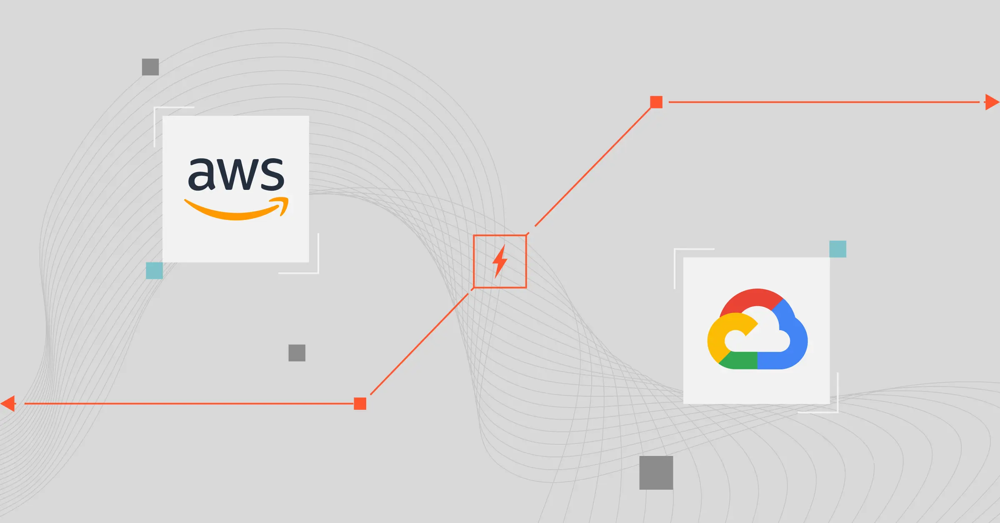

A passionate and dedicated Systems Engineering graduate with a robust background in information technology and cloud development. My journey in the tech industry has equipped me with a unique blend of creativity and analytical prowess, enabling me to bridge the gap between technology and business effectively. I am actively seeking job opportunities in Cloud Computing (IaaS, PaaS, SaaS), Data Analysis, and Engineering, fueled by a passion for innovation and excellence in this dynamic industry.
My professional experience includes working with Salesforce (cloud-based CRM platform) and serving as an IT Engineer at Cognizant Technology Solutions, I possess extensive experience in crafting sophisticated business processes and providing innovative solutions. Explore my portfolio below to see my projects in detail and discover how I can add value to your team.
I developed this URL classification tool to enhance my skills in machine learning and Python programming, among others. This project allowed me to delve deeper into data preprocessing, exploratory data analysis (EDA), and machine learning modeling. Moreover, focusing on cybersecurity awareness through practical application broadened my understanding of digital security practices. Overall, this project not only reinforced my technical expertise in data science but also underscored the importance of applying machine learning for solving real-world challenges in cybersecurity.

In AWS and Google Cloud migration and modernization project, I tackled the challenge of transitioning applications and databases from on-premise servers to advanced cloud environments. Using AWS S3 for robust data storage and Google Cloud's SQL and Kubernetes for scalable infrastructure, employed Terraform for efficient infrastructure as code management.
Approach to problem-solving involved designing scalable architectures. Utilized methodologies such as Infrastructure as Code (IaC) with Terraform to automate deployment processes and ensure consistency across environments.
This project showcases my ability to manage and analyze complex datasets, specifically focusing on global COVID-19 data. Using MySQL, I created a structured database to store and manipulate data, performing advanced calculations to derive meaningful statistics. I integrated multiple datasets to provide a comprehensive view of the pandemic's impact, highlighting key metrics such as infection and death rates across different regions. The analysis was further enhanced by dynamic and interactive visualizations created in Tableau, which effectively communicated the insights derived from the data.
In this project, I leveraged my SQL skills to conduct extensive Exploratory Data Analysis (EDA), By analyzing a comprehensive dataset that detailed layoffs across various companies, uncovered trends and patterns that shed light on the impacts of economic instability on workforce management strategies.